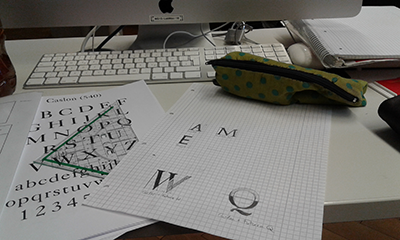

Blog
Hier werden nach und nach immer wieder Einträge erscheinen was ich so an der Dualen Hochschule
mache. Nicht unbedingt jeden Tag. Eher dann, wenn es auch was interessantes gibt.
Das sind alles meine persönlichen Erfahrungen, die sind natürlich nicht 100% übertragbar und subjektiv.
Aber es gibt zumindest mal einen Einblick in das was einen im Studium Mediendesign erwarten KÖNNTE.
Zum 02. Oktober 2018: Der erste Tag

Das Semester hat zwar offiziell schon am 1. Oktober begonnen, aber der war in unserem Vorlesungsplan
nur als Anreisetag vermerkt. Heute gab es dann Nachmittags erstmal die "Einführung in das Studium" beim
Studiengangsleiter. Insgesamt sind wir dieses Jahr laut meiner Zählung 26 Studenten in unserem Kurs, laut der
Zählung unseres Studiengangleiters 25...wer auch immer hier nicht richtig gezählt hat. Auf jeden Fall konnten wir uns
gemütlich in einen Stuhlkreis setzen.
Unser Studiengangsleiter ist darauf eingegangen was uns so erwartet und auf indirekte Weise auch was von uns erwartet wird.
Dabei hat er häufig betont, dass es wichtig ist Fehler zu machen und, dass wir an der Hochschule in unserem
Studienbereich ein sehr familiäres Verhältnis haben und uns nicht nur innerhalb unseres Semesters, sondern
über alle Semester hinweg unterstützen.
Nachdem er dann alles gesagt hatte was er sagen wollte ging die übliche Vorstellungsrunde los... Für mich war
dabei interessant zu sehen, dass, entgegen meiner Erwartung, zwar einige, aber bei weitem nicht alle davor eine Ausbildung
im gestalterischen oder grafischen Bereich gemacht haben. Und natürlich gab es einige die direkt nach dem Abi oder
nach so einer Ausbildung gekommen sind, aber der Großteil hat auch ein paar Umwege gebraucht bis sie den Mut hatten
das zu tun was ihnen die, bei der Vorstellungsrunde so häufig angesprochene, kleine Stimme im Kopf gesagt hat was eigentlich ihr Ding ist.
Darüber hinaus gab es auch ein paar organisatorische Dinge die besprochen werden mussten. Z.B. ob alle unsere Angaben zu
unseren persönlichen Daten stimmen oder Regeln wie mit den PCs im Mac-Labor (ein Raum voller Apple-PCs..) umzugehen ist oder
bezüglich einer Exkursion die wir in zwei Wochen in eine Hütte in die Schweiz machen werden.
Nachdem das alles geklärt war bekamen wir alle ein Skizzenbuch für unsere vielen Ideen geschenkt und wurden von den Studenten
aus dem 5. Semester abgeholt. Die haben uns dann einmal alle Räumlichkeiten der Hochschule gezeigt und uns allerhand Tipps und Tricks
mitgegeben.
Zum 04. Oktober 2018: Grundlagen Typografie und Briefing
Typografie

Die erste Veranstaltung des Tages waren die Grundlagen der Typografie.
Zuerstmal wurden natürlich alle Regeln die im Kurs gelten besprochen wie der Verbot der Handys (außer, wenn wir selbstständig arbeiten, zum Musik hören),
dass das Essen verboten ist (wir sind im Mac-Labor, also selbsterklärend) und, dass wir erwachsen sind und, wenn wir was trinken oder auf's Klo wollen,
einfach gehen sollen.
Dann wurde auf das organisatorische und thematische Eingegangen. Also was alles gemacht werden muss, welches Material wir brauchen und
welche Literatur wir brauchen.
Am Ende des Semesters muss eine Mappe mit den Übungen ein gebundenes Portfolio in Form eines DinA4-Booklet abgegeben werden.
Gearbeitet wird dabei auf Karopapier, Millimeter-Papier und Transparentpapier mit Bleistift, Fineliner oder Tusche. Im Portfolio ist es dann egal
ob man das Original oder eine Kopie davon nimmt.
Nachdem alles "drumherum" besprochen war wurden uns Beispiele von Schriften in verschiedenem Kontext gezeigt und darauf eingegangen ob die Schrift passend ist
oder nicht und warum. Danach sind wir noch auf verschiedene Schrifttypen eingegangen und wann welche Schriftsorten meistens verwendet werden. Zu guter Letzt haben wir
ein Skript mit verschiedenen Schriftarten bekommen deren Buchstaben wir abzeichnen sollten. Das war dann auch die Aufgabe die wir daheim fortsetzen sollten: Buchstaben verschiedener
Schriftarten abzeichnen und die Buchstaben verschiedener Sorten versuchen zu mischen, also aus zwei Buchstaben unterschiedlicher Schriftarten einen machen oder sie verschmelzen lassen.
Briefing
Mit Briefing konnte ich nicht sehr viel anfangen und ein klarer verstöndlicherer Begriff fällt mir auch nicht ein. Kurz gesagt wurde uns ein Projekt für dieses Semester gegeben.
Davor wurden uns aber Arbeiten verschiedener Künstler und anderer Studierender unseres Studiengangs gezeigt. Aufbauend darauf wurde uns gesagt was die Intention dahinter ist, dass wir
dieses Projekt bekommen, in unserem Fall die Ideenfindung, und auch was von uns erwartet wird.
Unser Projekt ist ein freies Projekt, das heißt, dass wir mit jedem Medium arbeiten können das wir wollen und uns innerhalb der gegebenen Themen selbst überlegen können was wir machen,
was wir damit ausdrücken und wie wir es auslegen. Dabei muss auch nicht das gesamte Thema abgedeckt sein, sondern wir können uns auch einen Teilaspekt heraus suchen oder es in Verbindung mit
etwas bringen.
Insgesamt ist das Ziel (von jedem Projekt), dass es eine Wirkung erzielt und sich andere darin wieder finden. Dabei stellt sich natürlich auch die Frage "Was will ich?" bzw. "Was will ich rüber bringen?"
Wichtig ist dabei nicht, dass es eine kompliziert ausgefeilte perfekte Arbeit wird, sondern es kann auch ganz simpel sein. Wichtig ist, dass der Funke überspringt. Letzten Endes sehen wir etwas an und fühlen zuerst mit dem
Bauch, erst dann hinterfragen wir mit dem Kopf, warum wir zum Beispiel etwas sehen. Deshalb ist es wichtig die Empathie des Menschen anzusprechen.
Es wurden auch die zwei Hauptängste die in allen Kulturen vorkommen angesprochen, die Angst Fehler zu machen und die Angst vor dem Unbekannten. Laut den Dozenten würden wir diese zwei Ängste in den ersten
beiden Semestern überwinden. Es wurde auch auf den Weg des Kreativen Arbeitens eingegangen, dass er nicht geradlinig ist, sondern man manchmal das Ziel, manchmal die Methoden und manchmal die eigene Arbeit ändern muss.